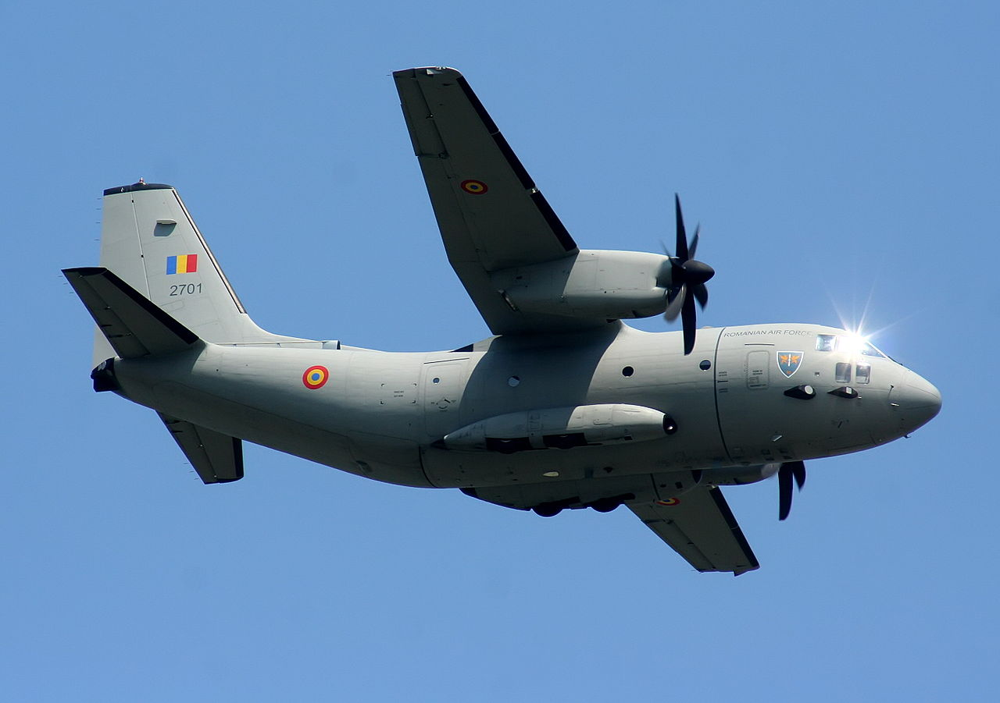

|

|
O altă direcţie importantă, care a devenit parte integrantă a activităţii Forţelor Aeriene Române, o constituie misiunile de intervenţie în situaţii de urgenţă civilă, cum sunt
transporturile de persoane şi materiale, zborurile cu destinaţie umanitară ş.a. Între acestea pot fi menţionate operaţiile executate în anul 2011, în Libia, pentru evacuarea cetăţenilor
români şi străini aflaţi în zonă de conflict, zborurile pentru transport de echipament şi materiale în Turcia pentru ajutorarea populaţiei afectate de cutremur, misiunile din Spania,
Germania sau Muntenegru. S-au efectuat, de asemenea, misiuni de zbor pentru evacuare medicală a bolnavilor în stare gravă către centre medicale de urgenţă, dar şi acţiuni de
colectare şi transport al alimentelor şi materialelor de necesitate imediată, în zonele afectate de calamităţi.
|
În cadrul Forţelor Aeriene a fost demarat principalul program de înzestrare al Armatei României, achiziţia a 16 avioane de vânătoare F-16. Un alt program important
de înzestrare este achiziţia a şapte avioane de transport mediu-curiei C-27 J Spartan, primele şase aeronave fiind deja operaţionale în cadrul bazei de la Otopeni.